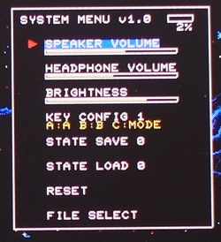
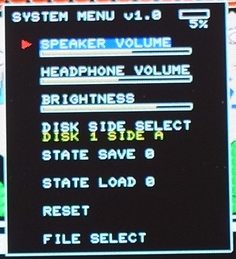
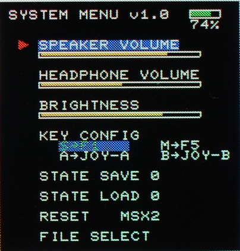
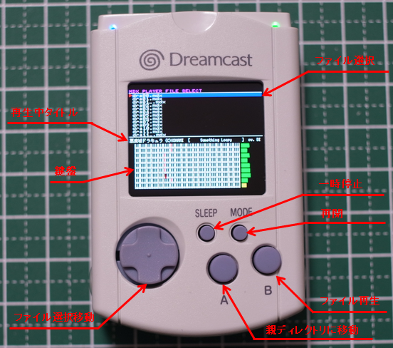
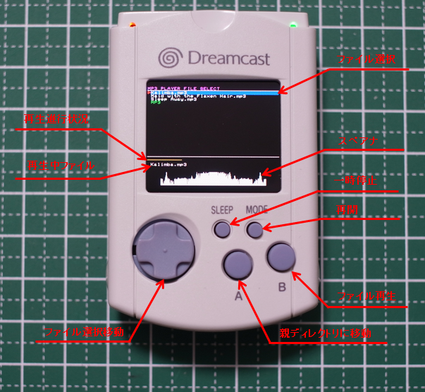

ファームウェアについて
VMCをさまざまな機能をサポートするために各種ファームウェアを用意しています。
動作させたいファームウェアをダウンロードしてファイルを解凍したら、ダウンロード方法に従ってVMCにダウンロードしてください 。
Megadrive Emulator
Megadriveを動作させるためのファームウェアです。下記からダウンロードしてください。
MegaDrive Emulator Firmware
システムメニューはキーコンフィグ(1～3まで選べます)が増えています

Game Gear / Master System Emualtor
Game Gearまたは Master Systemを動作させるためのファームウェアです。下記からダウンロードしてください。
GameGear / MasterSystem
Emulator Firmware
拡張子が.ggの場合はGame Gear、.smsの場合はMaster Systemが起動します。
Famicom Emulator
Famicomを動作させるファームウェアです。下記からダウンロードしてください。
Famicom
Emulator Firmware
システムメニューはディスク面の選択が増えています

ディスクシステムを起動するにはBIOS ROMをdisksys.romというファイル名でSDカードのルートに置いてください。
(ファイル属性を隠しファイルに変更しておくと、ファイル一覧から見えなくなりますのでお勧めです)
拡張子が.nesがROM、.fdsがDiskSystem、.nsfは音源再生になります。
NEOGEO Emulator
NEOGEOを動作させるファームウェアです。下記からダウンロードしてください。
NJEMUベースですのでrominfo.mvsをルートに置いてください。ROMもそれに合わせたzipを用意 してください。
BIOSはJapan AESを使いますので、それに合わせたBIOSを圧縮してneogeo.zipとしてルートに置いてください。
解凍状態で合計32MByte以上になるゲームは起動できません。
まだステートセーブロードには対応していません。
PC-Engine Emulator
PC-Engineを動作させるファームウェアです。下記からダウンロードしてください。
PC-Engine Emulator Firmware Ver1.1
CD-ROM2を起動するにはSYSTEM
ROMをsyscard3.pceというファイル名でSDカードのルートに置いてください。
(ファイル属性を隠しファイルに変更しておくと、ファイル一覧から見えなくなりますのでお勧めです)
拡張子が.pceがHuCard、.cueがCD-ROM2になります。CD-ROM2は
cueシートから実体のイメージを参照しますので、イメージも 置いてください。
CD-ROM2対応はβ版です。動作しないソフトや、読み込み時の処理落ちなど制限事項があります。
SuperGrafxには対応していません。
MSX Emulator
MSXを動作させるファームウェアです。下記からダウンロードしてください。
MSXを起動するにはMSX2J.ROM、MSX2JEXT.ROMが必要です。FM音源を鳴らす場合はFMPAC.ROM、ディスク対応
の場合 はDISK.ROMが必要です。
それぞれSDカードのルートに置いてください。
(ファイル属性を隠しファイルに変更しておくと、ファイル一覧から見えなくなりますのでお勧めです)
システムメニューはKEY CONFIGの設定を追加しています。

KEY
CONFIGにカーソルを合わせて、変更したいキーを押すとハイライトが移動しますので、その状態で左右キーを押すと変更できます。
SはSLEEP、MはMODEという意味です。(ボタンの位置と表示位置を合わせてあります)
方向キーとABボタンは、そのままJOYSTICKに割り当ててあります。(ABは入れ替え可能です)
RESETは左右キーでMSXのモードを変えられます。(PATCHはディスクBIOSのパッチを当てます)
とりあえずfMSXと同じ名前のROMを置いておけば各モードでは動作しますが、MSX2でしか動作確認を行っていません。
PALのROMには対応していません。NTSCのROMを使用してください。
動作中のディスク交換はFILE SELECTから行ってください。
MDX Player
MDX Playerを動作させるファームウェアです。下記からダウンロードしてください。
MDX Player Firmware

ファイル一覧には.mdxの拡張子のファイルしか表示されません。
圧縮PDX対応、PCM8対応です(鍵盤上は1音目しか対応しませんが、音は出ます)
MP3 Player
MP3 Playerを動作させるためのファームウェアです。下記からダウンロードしてください。
MP3 Player Firmware
